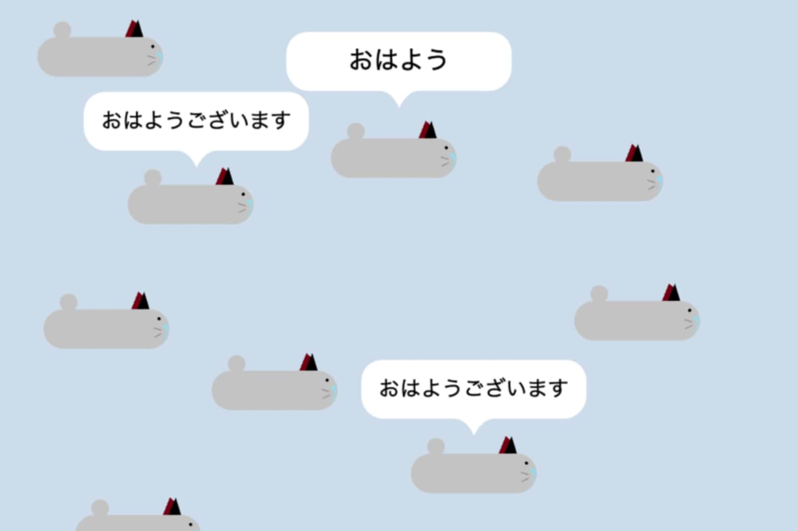

10人以上接続できるオンライン

リンク
以下のリンクから実際に作品をプレイすることができます。
SCRATCHで見る YouTubeで見る SCRATCHでプレイするには、Scratcherのアカウントでログインする必要があります。使用方法
ホーム画面
「ユーザー名で接続」を押すと指定したユーザー名の人と2人でゲームをプレイすることができます。
「接続」を押すとユーザー名を恣意することなく、複数人で遊ぶことができます。
「ホストに接続」を押すと自分が接続可能な相手に接続できます。相手は「ユーザー名で接続」の場合は待機中、「接続」の場合はプレイ中である必要があります。
ユーザー名で接続
ボタンを押すとテキストボックスが出てきます。キーボードを使って接続したい相手の名前を入力してください。入力が完了したらチェックのボタンを押すと待機を開始します。相手が「ホストに接続」から接続するとプレイできます。
接続
ボタンを押すとゲームが始まります。相手がゲームに参加すると画面に表示されます。「接続」では、フレームレートが下がりますが、プレイヤーが10人以上いても接続できます。
ホストに接続
ボタンを押すと自分が接続可能なホストが表示されます。ボタンをクリックしてホストに接続することができます。
キーの操作
矢印キーでプレイヤーを移動させ、Tキーでチャットを開くことができます。